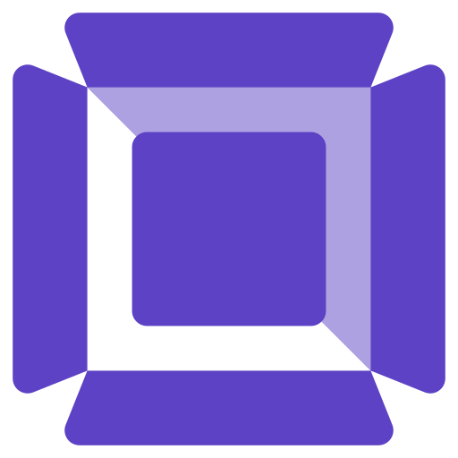
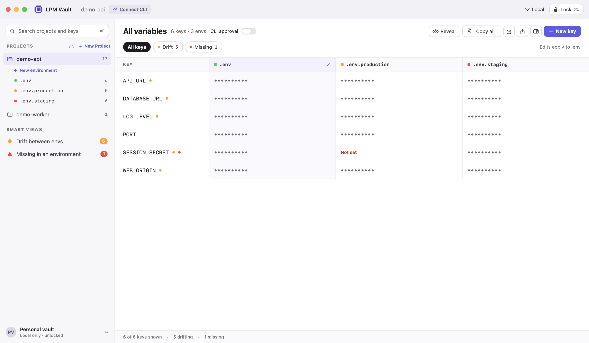

LPM VaultEvery .env,
one vault.
Project secrets for your Mac.
Ready for the LPM CLI.
Keychain storage · Encrypted sync
Free and open source


LPM VaultProject secrets for your Mac.
Ready for the LPM CLI.
Keychain storage · Encrypted sync
Free and open source
